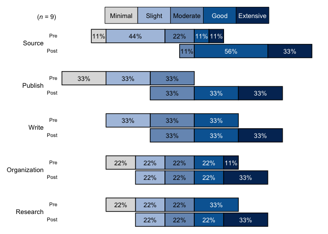
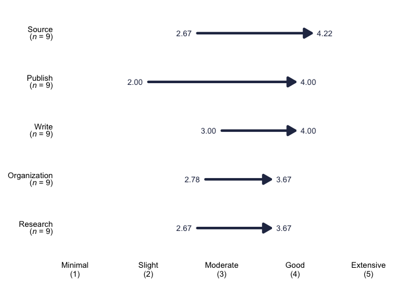

The goal of TheMarkUSA is to make data cleaning and the creation of visualizations easier and faster for The Mark USA, Inc. The functions in TheMarkUSA create visuals with The Mark USA branding and helper functions for common data cleaning and manipulation tasks for use for everyone at The Mark USA, Inc.
Installation
You can install the development version of TheMarkUSA from GitHub with:
# install.packages("devtools")
devtools::install_github("zcrowleyTheMark/TheMarkUSA")Example
A common problem with the current workflow at The Mark is converting numeric data to factor variables, especially 5 item likert scales: recodeFiveCat is a helper function to recode numeric data with 5 levels into factor variables with the desired levels.
library(TheMarkUSA)
items <- dplyr::tibble(
Pre_Organization = c(1, 2, 3, 4, 5, 4, 3, 2, 1),
Post_Organization = dplyr::if_else(Pre_Organization < 5, Pre_Organization + 1, Pre_Organization),
Pre_Source = c(2, 2, 3, 5, 4, 3, 2, 1, 2),
Post_Source = dplyr::if_else(Pre_Source < 4, Pre_Source + 2, Pre_Source),
Pre_Publish = c(1, 1, 1, 2, 2, 2, 3, 3, 3),
Post_Publish = Pre_Publish + 2,
Pre_Write = c(2, 2, 2, 3, 3, 3, 4, 4, 4),
Post_Write = Pre_Write + 1,
Pre_Research = c(1, 1, 2, 2, 3, 3, 4, 4, 4),
Post_Research = Pre_Research + 1
)
levels_min_ext <- c("Minimal", "Slight", "Moderate", "Good", "Extensive")
cat_items_1 <- recodeFiveCat(items, levels_min_ext)
cat_items_1
#> # A tibble: 9 × 20
#> Pre_Organization Post_Organization Pre_Source Post_Source Pre_Publish
#> <dbl> <dbl> <dbl> <dbl> <dbl>
#> 1 1 2 2 4 1
#> 2 2 3 2 4 1
#> 3 3 4 3 5 1
#> 4 4 5 5 5 2
#> 5 5 5 4 4 2
#> 6 4 5 3 5 2
#> 7 3 4 2 4 3
#> 8 2 3 1 3 3
#> 9 1 2 2 4 3
#> # ℹ 15 more variables: Post_Publish <dbl>, Pre_Write <dbl>, Post_Write <dbl>,
#> # Pre_Research <dbl>, Post_Research <dbl>, cat_Pre_Organization <fct>,
#> # cat_Post_Organization <fct>, cat_Pre_Source <fct>, cat_Post_Source <fct>,
#> # cat_Pre_Publish <fct>, cat_Post_Publish <fct>, cat_Pre_Write <fct>,
#> # cat_Post_Write <fct>, cat_Pre_Research <fct>, cat_Post_Research <fct>The user simply passes a data frame of all the items to be recoded with a character vector of the 5 scale likert levels in the corresponding order as the numeric data.
Data Visualizitons Examples
TheMarkUSA currently contains three helper functions for generating visualizations: stackedBarChart, divBarChart, and arrowChart.
stackedBarChart and divBarChart both take in two arguments: df A tibble or data frame of survey items that are categorical/character variables, in 5 point scales and pre-post, that will be inserted into a stacked bar chart with The Mark USA branding. set_5_levels character vector of levels of the factor variables to be added to the plot, this will set the scale for the x-axis of the bar chart and its labels.
stackedBarChart
stackedBarChart creates a fully stacked bar chart that has the branding/style of The Mark USA, INC.
# Select only the categorical/factor vars from the df in the last chunk (cat_items_1) using tidy select(contains("cat")):
cat_items_plot <- cat_items_1 %>% dplyr::select(tidyselect::where(is.factor))
# Run the function with the categorical items and the character vector of the factor levels:
stacked_chart_1 <- stackedBarChart(cat_items_plot, levels_min_ext)
stacked_chart_1
divBarChart
divBarChart creates a diverging and fully stacked bar chart that has the branding and style of The Mark USA, INC.
# Select only the categorical/factor vars from the df in the last chunk (cat_items_1) using tidy select(contains("cat")):
cat_items_plot <- cat_items_1 %>% dplyr::select(tidyselect::where(is.factor))
# Run the function with the categorical items and the character vector of the factor levels:
div_chart_1 <- divBarChart(cat_items_plot, levels_min_ext)
div_chart_1
arrowChart
arrowChart take in three arguments: df A tibble/data frame of survey items that are categorical/character variables, in 5 point scales and pre-post, that will be inserted into a stacked bar chart with The Mark USA branding. set_levels character vector to set up the labels for the x-axis, this will match the numeric response in the data. color_groups character vector of hex codes for colors to associate to each group to, e.g. this data has two groups and this function creates an overall group so the user needs to pass the function in the colors_group argument a character vector of three colors- colors need to be in the order you want them associated to the group based on the factor levels for the group variable, last color will be the overall group of “all”.
arrowChart creates an arrow chart from numeric data based on the pre-post averages for each group and the overall group for the whole data set with the branding and style of The Mark USA, INC. arrowChart sorts the chart with the highest post scores on the top and lowest on the bottom.
# Select only the numeric variables from the df in the last chunk (cat_items_1) using tidy select(contains("cat")), adding a group variable that is set as a factor:
arrow_items <- cat_items_1 %>% dplyr::select(tidyselect::where(is.numeric)) %>%
dplyr::mutate(group = c(
"grad", "undergrad", "grad", "undergrad","grad", "undergrad", "undergrad", "grad", "undergrad"
),
group = factor(group, levels = c("grad", "undergrad")))
# Set up the labels for the x-axis, this will match the numeric response in the data:
levels_min_ext <- c("Minimal", "Slight", "Moderate", "Good", "Extensive")
threeScale_theMark_colors <- c("#79AB53", "#4B9FA6", "#2C2C4F")
# Run the function with the first argument being the data frame of numeric items and factor group variable, second argument is the levels for the x-axis labels, and the third argument is the colors to pass as the and the character vector of the factor levels:
div_chart_1 <- arrowChart(arrow_items, levels_min_ext, threeScale_theMark_colors)
div_chart_1
More functions and visuals will be added to TheMarkUSA as needed, be sure to reach out with any ideas for the package or issues!